- 45년 전통으로 빚어낸 울산의 대표 전통주
- [ 태화루 ]
새벽을 여는 술, 살아있는 술
울산 탁주 태화루
- 전통탁주 제조공법 그대로
- 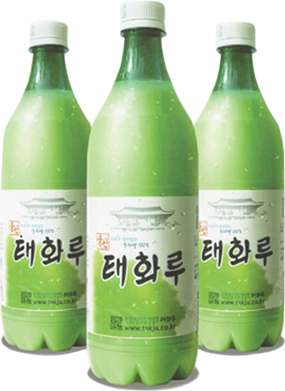
-
40년간 우리 전통주의 고유한 제조방법을 계승,
전통주의 외길을 걸어온 노력의 결정체로
사계절 변함없는 고품질의 좋은 술입니다.
-
우리쌀 태화루
100% 우리 쌀로 빚은 프리미엄 막걸리
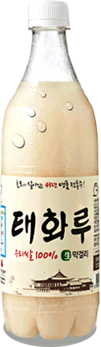
우리쌀로 빚어
한층 더 부드러워진
프리미엄 태화루
순하고, 청량감 넘치는
그 맛은 그대로.
용량 | 750ml
도수 | 5.5도
원료 | 백미 90%(국내산),
올리고당 10%
-
태화루
45년 전통으로 빚어낸 울산의 대표 전통주
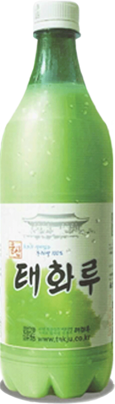
한 층 발전된 발효 공법으로
뒤끝이 없는 울산 태화루
부드럽고, 순하며, 청량감이
넘치는 쌀 동동주
용량 | 75ml
도수 | 5.5도
원료 | 백미 90%(미국산)
올리고당 10%
-
<막걸리>
남들은 막걸리를 술이라지만
내게는 밥이나 마찬가지다
막걸리를 마시면
배가 불러지니 말이다
막걸리는 술이 아니다
쌀로 만드는 막걸리는
영양분이 많다
그러니 어찌 술이랴!
나는 막걸리를 조금씩만 마시니
취한다는 건 모른다
거저 배만 든든하다
기분만 좋은 것이다
천상병 시 中 - 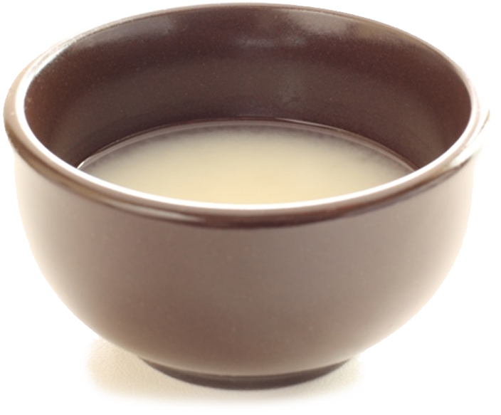
-
막걸리
막걸리는 찹쌀, 멥쌀, 보리, 밀가루 등의 곡물을 찐 다음 누룩과 물을 섞어서 발효시킨 우리 고유의 술이다. 곡물로 술을 담가 익히면 맑은 술이 위로 뜨고 밑으로는 술지게미가 가라앉는다. 위로 맑게 뜨는 술이 청주인데 막걸리는 청주를 거르기 전의 술로 증류 과정을 거치지 않고 막 걸러서 마신다고 해서 '막걸리'라는 이름이 붙었다.
-
영양의 보고
막걸리를 마시는 것은 알코올 성분만 제외하면 영양제를 먹는 것과 다름없다. 80%를 차지하는 물을 제외한 나머지 20%는 알코올 6~7%, 단백질 2%, 탄수화물 0.8%, 지방 0.1%이며, 나머지 10%는 식이섬유와 비타민 B, 비타민 C, 유산균, 효모 등이 혼합된 물질인 만큼 '영양의 보고'라고 불릴 만하다.
-
식이섬유
막걸리 한 사발에는 식이섬유가 일반적인 식이섬유 음료보다 100배에서 많게는 1000배 이상 많이 들어있다.
울산 제일의 프리미엄 막걸리 브랜드
- 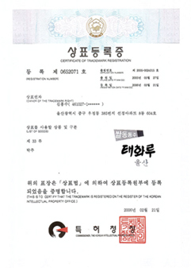
- 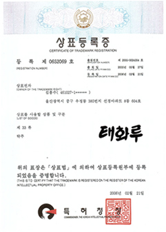
- 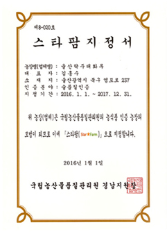
- 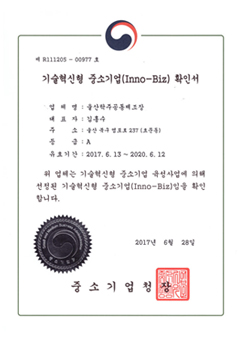
- 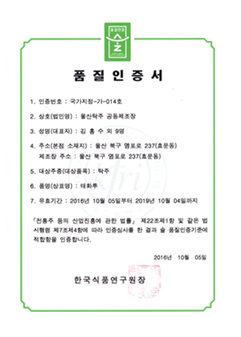
- 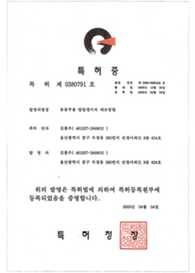
- 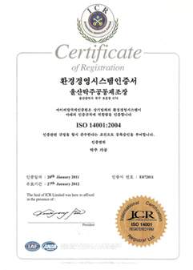
- 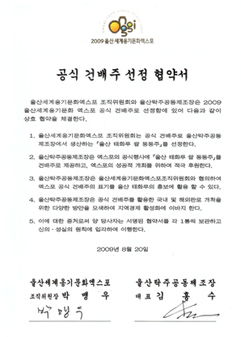
- 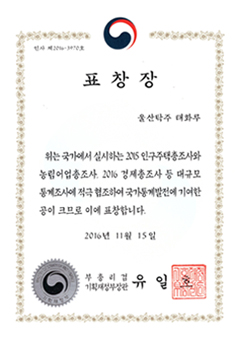
언제든지 전화주세요.
태화루에 전화주시면 지역 영업소에서
신속하게 공급해드립니다.